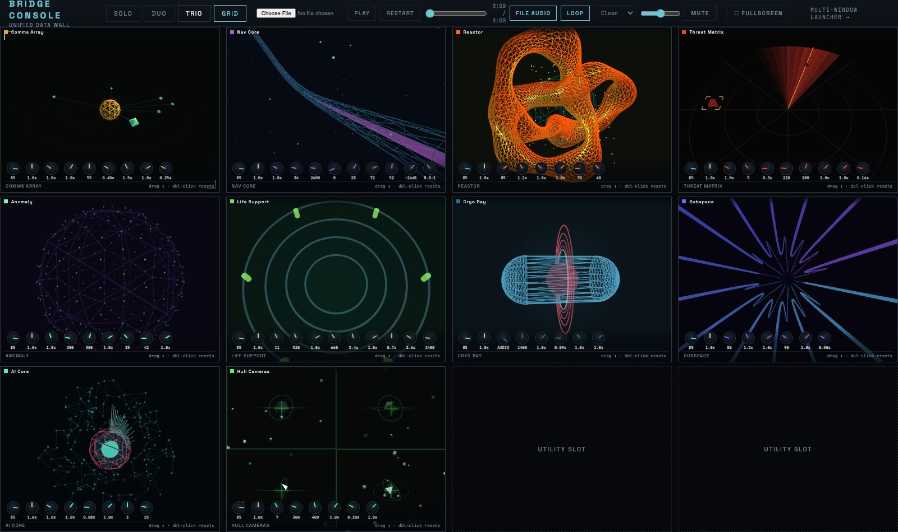
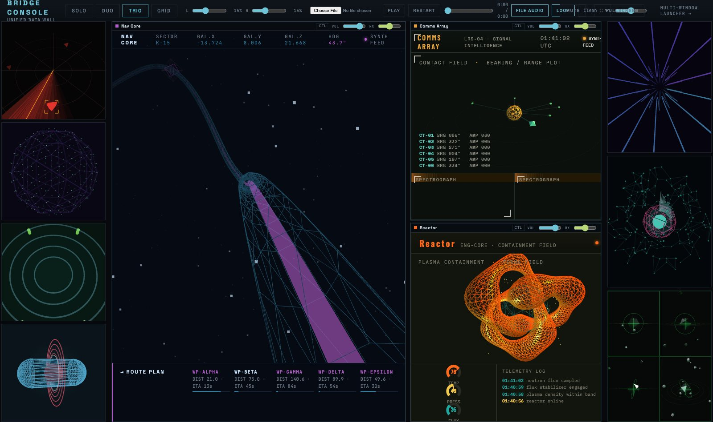

Ship Data Screens
Ten animated starship data screens that react to live sound and make sounds of their own. They run in the browser and as macOS screen savers.
Creative productionAudioBuilt with AI
10audio-reactive screens
4layouts: solo, duo, trio, grid
Livemic or file input
10macOS screen savers, sound included
The problem
- Starship control-room screens, running live instead of as video.
- Every screen had to react to real sound, and sound like something itself.
What I did
- Designed and built each screen as its own real-time visual, with a spectrograph, an oscilloscope and 3D animation.
- Made every screen react to your microphone or a dropped audio or video file, with a synth bed when there's no input.
- Gave each screen live sonification knobs, so you can retune what the console sounds like.
- Built the Bridge Console: all ten on one wall, in solo, duo, trio or grid layouts.
- Packaged every screen as a macOS screen saver with saverkit, a tool I built for it. They keep their sound.
- Built it with AI-assisted development, and wrote the plan for a native JUCE rebuild.
What changed
- Ten screens online in the Phase 1 prototype.
- One of them runs as my own screen saver.
- A design record for every screen, ready for the native build.

